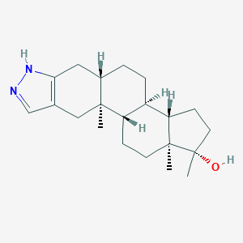

Stanozolol
- Stanozolol is a artificial anabolic steroid, formed through a series of reactions. It is derived from dihydrotestosterone in turn created from testosterone by the enzyme 5a-reductase, which reduces the C4-5 bond leading to the Formation of CH bonds thus creating dihydrotestosterone. Dihydrotestosterone forms from a condensation reaction from 3-keto-aldehyde-oxymetholone with hydrazine. Stanozolol is better than dihydrotestosterone for sports enhancement because unlike dihydrotestosterone the body cannot turn stanozolol into estrogen; when estrogen is produced can lead to unwanted side effects such as water retention and high blood pressure.
- Structure-

- C21H32N2O
- Effects
- Stanozolol affects the body in 2 primary ways: increasing muscle mass and increasing red blood cell count. Stanozolol binds to an androgen receptor to strengthen the expression of muscle protein. It grows the red blood cell count as well by expressing the proteins needed for the red blood cell production.
- Detection
- Stanozolol causes the liver to change its chemical structure, but stanozolol is not metabolized by the liver. As a result, detection tests such as gas chromatography-mass spectrometry or liquid chromatography-mass spectrometry of the urine sample allows the detection of stanozolol in the the origin of the urine.